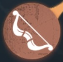
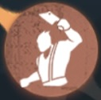

第五人格 アップデート追跡 キャラ調整・天賦調整
キャラクター調整と内在人格調整を記録
📅 2026年9月3日アップデート

マイムアーティスト
【愉快な演目】プレビュー時にカーソルが表示されているにもかかわらず、疑似的な木の板が生成されない不具合を修正しました。また、指を離した瞬間にカーソルが消えることで、疑似的な木の板が生成されない状況もあわせて調整しました。
【愉快な演目】サバイバーが疑似的な木の板を透視できる距離を16.9メートルから25.3メートルに延長しました。
【愉快な演目】ダッシュ終了後、すぐに疑似的な木の板を操作できるよう調整しました。操作すると、疑似的な木の板が早めに出現し、そのまま落とされるようになります。
【憂鬱の演目】リハーサルエリアが出現してから効果が発動するまでの時間を1.5秒から1.3秒に短縮しました。また、リハーサルエリアの半径を4.2メートルから3.8メートルに縮小しました。
【憂鬱の演目】1回の憂鬱の演目中、ハンターが小道具・雨傘によって気絶するたびに、次に気絶するまでの時間が0.3秒延長されます。
【憂鬱の演目】小道具・雨傘の使用ロジックを調整し、ステージ中央では障害物判定を行わず、障害物の中にも設置できるようにしました。
【感情蓄積】ゲートの解読でも、憂鬱の感情の欠片を獲得できるようになりました。
【深き契り】仲間がダメージを受けて負傷またはダウン状態になった場合にのみ、解読速度低下効果が発動するよう調整しました。また、解読速度の低下量を10%から8%に引き下げました。

作曲家
音律の調整によってクールタイムが返還される割合を下方修正し、最大返還時間を10秒から6秒に変更しました。

小説家
同じ対戦に参加している小説家1人につき、情報収集に必要な時間が4秒追加されます（最大12秒まで）。

復讐者
怨みの火の対戦開始時の蓄積進度を80%から90%に引き上げました。また、追撃中に毎秒増加する進度を1.8%から2.2%に、非追撃中に毎秒増加する進度を0.3%から0.4%にそれぞれ引き上げました。
4名のダウンしていないサバイバーが暗号機の解読を完了した際、怨みの火が追加で増加する仕様を削除しました。
新たな外在特質「怨念熾盛」を追加しました。サバイバーが脱出を目指すほど、レオの心に燃える怨みの火は勢いを増していき、暗号機が1台解読されるたびにレオは前へと駆り立てられ、8秒間、移動速度が8%上昇します（重ねがけ可能）。サバイバーがロケットチェアに拘束されると、この効果は対戦終了まで無効になります。

夢の魔女
原生信者は、操作されていない状態でも、自身から半径8メートル以内にいるサバイバーを透視できるようになりました。

「心の獣」
攻撃がフライホイール効果状態のサバイバーおよび不感状態の「ルイ」に命中した際、獲物マークは付与されなくなりました。
追襲がサバイバーの救助を中断できなくなりました。
追襲のクールタイムが15秒から16秒に増加しました。
追襲の移動速度と、特殊引っ掻き攻撃の移動距離をわずかに減少させました。
追跡の探知範囲を30メートルから25メートルに減少させました。
襲撃の攻撃距離を3.12メートルから2.78メートルに、襲撃溜め攻撃距離を3.2メートルから2.87メートルに減少させました。
引っ掻き攻撃の攻撃前アクション時間が0.4秒から0.5秒に増加しました。
襲撃と引っ掻き攻撃の繋がりの操作感を調整しました。
🗺️ 月の河公園
サバイバーがスプリングボックスを使用した後、45秒間は同じスプリングボックスを再度使用できないよう調整しました。また、同じスプリングボックスは使用されてから5秒後に、ほかのサバイバーが使用できるようになります。
📅 2026年7月2日アップデート
庭師
闘牛士
マジシャン
探鉱者
作曲家
カウボーイ
バーメイド
医師
納棺師
冒険家
弓使い
心眼
「騎士」
「泥棒」
火災調査員
バッツマン
彫刻師
断罪狩人
書記官「悪夢」
結魂者
ヴァイオリニスト
写真家
「歯医者」
「ビリヤードプレイヤー」
「足萎えの羊」
時空の影
「女王蜂」
🗺️ 湖景村
🗺️ 月の河公園
🗺️ 軍需工場
🗺️ 赤の教会
🛠️ その他の対戦調整

庭師
工具箱のクールタイムが12秒から14秒に調整されました。

闘牛士
ハンターがムレータに引き寄せられた瞬間、付近で追撃状態にあるサバイバーが闘牛士のみの場合、ハンターの操作速度は低下しなくなります。
ハンターがサバイバーの周囲6メートル以内で攻撃を行った際の闘牛士の移動速度低下効果が10%から15%に上昇しました。1.5秒間持続します。

マジシャン
マジシャンが初めてサバイバーをロケットチェアから救助した後、自身と救助されたサバイバーが2秒間姿を隠すようになりました。

探鉱者
探鉱者の周囲15.2メートル以内に他のサバイバーがいる場合、ハンターを引き寄せた際に発生する気絶効果が32%減少していた効果を、ハンターの周囲18メートル以内に他のサバイバーがいる場合、気絶効果が38%減少するように調整しました。
作曲家
外在特質「調律」調整：音叉を叩くと、20秒間にわたって合計24回の音律調整が発生し、4回目・12回目・20回目は雑音調整となります。累計5回の調整に成功すると効果は即座に終了します。雑音調整に成功すると、1秒間持続するより広い範囲の調音エリアが現れ、エリア内では移動速度が85%上昇します。効果終了後、音律調整の持続時間に応じて一部のクールタイムが返還されます。
持ち物ボタンを押してから、初回の音律調整が発生するまでの時間を短縮しました。
持ち物の基礎クールタイムが47秒に調整されました。

カウボーイ
投げ縄がサバイバーに命中した後のアクション硬直が0.3秒短縮されました。
投げ縄が風船に拘束されたサバイバーに命中した時、風船抵抗進度の増加量が10%から15%に調整されました。

バーメイド
度数の高いドーフリン酒の飲酒によるほろ酔い状態持続時間が25秒に調整されました。ほろ酔い状態が15秒持続すると恐怖値が4分の1低下し、その10秒後、ほろ酔い効果終了時にさらに恐怖値が4分の1低下します。
バーメイドがサバイバーにドーフリン酒を渡した後、受け取ったサバイバーは移動することで飲酒後のアクションをキャンセルできます。
攻撃を受けた際のアクション再生中もドーフリン酒を飲めるようになりました。
法定飲酒年齢に満たない客をもてなす際、ドーフリン酒をノンアルコール飲料に差し替えます。

医師
外在特質「医術熟練」の効果を調整しました。医師が1/2/3/4人いる場合、他者を治療する速度上昇効果が40%/25%/10%/5%から30%/20%/10%/5%に低下しました。
鎮静剤による自己治癒速度が20%上昇し、自己治癒に成功するたびに自身の自己治癒速度が5%低下します。この効果は最大10回まで重複可能です。

納棺師
納棺師は溜め操作で霊柩を設置できるようになり、溜め動作中も移動可能になりました。
納棺師が棺桶を設置する際のアクション速度が上昇しました。
棺桶から蘇生した際の無敵効果の持続時間が7秒から8秒に変更されました。
容姿を記録されたサバイバーが荘園を脱出した後でも、納棺師は霊柩を使用できます。
蘇生したサバイバーが獲得する加速効果の時間が1秒から1.4秒に増加しました。
霊柩の設置判定を最適化し、斜面にも霊柩を設置できるようになりました。

冒険家
外在特質「探検」による足跡の持続時間減少効果を1秒から2秒に変更し、新たに負傷中でも追加の破片痕跡が発生しなくなる効果を追加しました。

弓使い
アームボウのクールタイムが14秒から16秒に増加しました。
外在特質「バッコスの精神」の効果を調整し、ハンターに対する感知範囲の減少量が24%になりました。
竜骨弓のクールタイムが14秒から16秒に増加しました。

心眼
外在特質「自衛」を新たに追加しました。効果：足跡の持続時間が1秒減少し、負傷状態では追加の破片痕跡が表示されなくなります。

「騎士」
外在特質「栄誉共鳴」に新たなメカニズムを追加しました。仲間の救援に成功すると、自身の解読速度が10%上昇します（最大20%まで重ねがけ可能）。

「泥棒」
懐中電灯を使用する時、レーダーに地形が表示されるようになりました。

火災調査員
自身が携帯しているエアバッグの数が0の時、エアバッグを他のアイテムと交換できるようになりました。
エアバッグが膨らむ過程でサバイバーを押し退けないようになりました。

バッツマン
自身が所持しているクリケットボールの数が0の時、クリケットバットを他の持ち物に入れ替えられるようになりました。

彫刻師
長押しで俊敏の形、知恵の形を使用する際の自身の移動速度低下量が6%から3%に減少しました。
攻撃と溜め攻撃が命中した後の回復時間が0.3秒短縮されました。
攻撃がモジュールに命中した際の判定ロジックを最適化しました。

断罪狩人
チェーンクロウのクールタイムが14秒から13秒に短縮されました。
チェーンクロウがサバイバーに命中した後、対象付近の小範囲内に他のサバイバーがいる場合、そのサバイバーも同時に断罪狩人のもとへ引き寄せられます。
サバイバーがチェーンクロウで一部の自由に移動できない位置に引き寄せられた場合、短時間の間、断罪狩人との衝突を無視します。

書記官「悪夢」
新たな外在特質【公正判決】を追加しました。付近一定範囲内に自由に行動できるサバイバーがいる時、判決値が持続的に増加し、サバイバーの人数が多いほど増加速度が上昇します。判決値が最大まで蓄積されると、15秒間、移動速度と攻撃回復速度が8%上昇する判決状態に入ります。攻撃がサバイバーに命中すると、この状態は即座に解除されます。
いずれかのサバイバーが脱落した後の無効の操作禁止時間が9秒から7秒に短縮されました。
「悪夢」：渡鴉が旋回しているサバイバーの移動速度が3%低下します。

結魂者
クモの巣加速効果を獲得した際、画面下部に残り持続時間が表示されます。
クモの巣の判定体積を拡大させました。
クモの巣加速効果を1/2/3層獲得した時、気絶回復速度も5%/10%/20%上昇します。

ヴァイオリニスト
奏鳴曲を長押しで使用する際の移動速度低下効果を6%から3%に引き下げました。
奏鳴曲で1つ目の音符を放った後、2つ目の音符を放てる時間が5秒から6秒に延長されました。
奏鳴曲を長押しで発動する際のプレビューエフェクトがサバイバーと重なるようになりました。

写真家
通常攻撃前のアクション時間が0.5秒から0.4秒に短縮されました。
時空残像で過去に戻った後のアクション中も攻撃を行えるようになりました。

「歯医者」
レンズの持続時間が10秒から9秒に短縮されました。
沼より現る発動後のアクション時間が0.3秒延長されました。
引き留める状態中、菌類攻撃で通常攻撃1.5倍分のダメージを与えられなくなりました。

「ビリヤードプレイヤー」
サバイバーが1人脱落した後の暗号機後退割合が毎回12%から9%に引き下げられました。
手球の持続時間が16秒から11秒に短縮され、サバイバーが拘束されているロケットチェア付近で移動する際のエネルギー消費速度を下げました（総持続時間は変わりません）。
負傷状態のサバイバー1人ごとの慣性持続時間増加量が2.5秒から2.1秒に減少しました。

「足萎えの羊」
怨みの力の初期値が10減少しました。
怨みの力の上限が110から100に減少しました。

時空の影
侵蝕転送のクールタイムが43秒から47秒に増加しました。
サバイバーが脱落、またはゲートが通電した際の侵蝕の破片の最大存在時間が60秒から50秒に短縮されました。

「女王蜂」
捕食状態の虫の群れがサバイバーに接触した後の獲得エネルギー値が12から10に減少し、吸収効果の移動速度ボーナスが13%から12%に低下しました。
反哺の飛行速度が15%低下しました。
熱殺蜂球のエネルギー消費量が毎秒6から毎秒7.5に増加しました。
🗺️ 湖景村
暗号機の出現位置を1組調整しました。
海辺の石浜、海辺の東屋エリアの海水による減速効果を削除しました。
海辺の東屋エリアに木の板を2枚追加し、それにつながる障害物を追加しました。
大船から海辺の東屋エリアへ向かう場所にある穴を坂道に変更しました。
トウモロコシ畑エリアのサイドゲート付近に木の板を1枚追加し、付近の障害物の位置を調整しました。
🗺️ 月の河公園
暗号機の出現位置を1組調整しました。
北橋の暗号機を壊れたメリーゴーランドエリアに移動させました。
壊れたメリーゴーランドエリアにある低い障害物を高い壁に変更しました。
メリーゴーランドエリアの窓を1か所削除し、木の板を2枚追加して、それにつながる障害物を追加しました。
4番ホームエリアのサイドゲート付近にあるモジュールの位置を調整し、木の板エリアとつながるようにしました。
新たな操作可能モジュール「スプリングボックス」を追加しました。サバイバーはスプリングボックスを使用して一定距離跳び出すことができます。クールタイムは30秒です。合計2つあり、北橋と南橋にそれぞれ配置されています。
🗺️ 軍需工場
中央エリアの木の板を1枚削除し、それにつながる障害物の位置を調整しました。
廃材エリアの壁を1面削除し、付近の空き地に障害物モデルを追加しました。
工場エリアの一部位置にある障害物を削除しました。
🗺️ 赤の教会
サイドドア廃墟エリアの壁を1面削除し、壁を1面短くするとともに、付近の空き地に障害物モデルを追加しました。
墓場エリアの木の板を1枚削除し、それにつながる障害物の位置を調整しました。
🛠️ その他の対戦調整
試合中、サバイバーのアイコン下のニックネームをタップすると、ステータス表示に切り替えられるようになりました。仲間の現在のアクション（解読、治療、抵抗、ハンターの創造物の破壊など）を表示し、解読以外の進捗も表示します。
フィールド上のサバイバーがダウン脱落によってハッチの開放を誘発した場合、サバイバーが脱落してから数秒遅れてハッチが開くようになりました。
サバイバーの移動速度が上昇した際、足跡が連続して表示されるようになりました。
サバイバーのエリア選択にて、編成とキャラクターに応じた配置のおすすめが表示されるようになりました（手動でオフに設定可能）。また、エリア選択の結果をローディング画面でも確認できるようになりました。
内在人格やスキルの影響でキャラクターが透視される場合、プレイヤーに相応のヒントが表示されるようになりました。
ノート、マッチングホールに「直近のキャラクターバランス調整」の表示を追加し、プレイヤーが確認できるようになりました。
ハンターがその場に立ち止まり、視点を大きく動かしていない場合、解読進捗が18%を超えており現在解読中の暗号機に対してより目立つエフェクトヒントを追加しました。解読進捗が50%を超えている暗号機の場合、ヒントエフェクトはさらに強調されます。
サバイバーが風船から抵抗して脱出した際、周囲の移動可能なスペースが狭い場合、短時間の移動においてハンターのブロックを無視できるようになりました。
対戦後のチャットチャンネルを、自動入室から手動入室に変更しました。
冒険家のページ、昆虫学者の虫の群れ操縦、道化師のドリルパーツ、「使徒」の威嚇のアイコンステータス表示を追加しました。
サバイバー視点における暗号機解読、脱出ゲート開放の情報表示を最適化し、解読加速/減速の要因を確認できるようになりました。
対戦時間の表示を追加し、戦闘中に現在の対戦時間をリアルタイムで確認できるようになりました。
対戦終了後に「もう1ゲーム」ボタンを追加しました。チームを組んでいない場合は前回の陣営で素早く次の試合をマッチングし、チームを組んでいる場合は素早くホールに戻ることができます。
仲間が発信する、通常および定型文以外のチャットをブロックできるようになりました。
サバイバーが風船に縛り付けられる時と降ろされる時に独立したアイコン表示を追加しました。
ランク戦、5人ランク戦、マルチ戦の録画において、シークバーの操作に対応しました（一部の機種のみ）。プレイヤーはシークバーをドラッグして再生進捗を調整できます。
サバイバーがロケットチェアに拘束された回数の表示を区別しました。
📅 2026年4月16日アップデート

雑貨商
雑貨商の通常攻撃の判定時間および動作時間を増加させました
雑貨商はより多くの状態で能力を自由に切り替えられるようになりました
雑貨商は1段階到達後、砕石売買、自然取引、高額依頼のクールタイムがすべて5秒に短縮
「女王蜂」
虫の群れが捕食状態でサバイバーに接触した際に獲得するエネルギー値が12から10に減少

「心理学者」
新たに外在特質「主観アンカー」を追加：「心理学者」がストレス反応を起こすと、患者の虚像が生成される。この時、「心理学者」はスキルボタンを長押しすることで患者の虚像を指定位置に出現させ、その方向へ向かって素早く駆け寄ることができる。駆け寄っている最中も虚像は移動可能。この効果は1回のみ発動する

オフェンス
ラグビーボールのクールタイムが5秒から6秒に増加しました

人形師
ロケットチェアに拘束されているサバイバーの周囲20メートル以内にいる場合、「ルイ」の残り時間減少速度が100%増加から160%増加に調整されました
闘牛士
なぎ払いの持続時間が0.6秒から0.5秒に短縮されました
ハンターがなぎ払いを受けた際の移動速度低下が50%から40%に引き下げられました
ムレータ技術のチャージ時間が65秒から70秒に延長されました
操作地点に残されるムレータの持続時間が8秒から6秒に短縮されました
闘牛士は追撃状態中にムレータ技術を使用した場合のみ、闘志を獲得できます
📅 2026年1月29日アップデート
冒険家
しゃがみ移動や歩行によって外在特質「実力蓄積」の移動速度上昇効果が発動しなくなりました。
「実力蓄積」特質による移動速度ボーナスが25%から35%に上昇しました。
縮小状態で板・窓の操作やロケットチェアに拘束されたサバイバーの救助が可能になりました。操作時に自動的に縮小状態が解除されます。
落ちた暗号ページに関する画面ヒントが追加されました。
外在特質「好奇心」による調整成功時の暗号機解読進捗増加量が0.8%から1.2%に上昇しました。

調香師
忘却の香を使用して時を遡った後に得られるダメージ軽減効果が2.5秒から3.3秒に増加しました。ダメージ軽減効果終了後の香水消散エフェクトの持続時間を短縮しました。
泥棒
懐中電灯使用時のカメラ視点が以前より遠くなりました。

患者
患者の障害物を乗り越えるアクション速度が向上しました。
患者が障害物に引き寄せられた後、そこから飛び出すアクションに移行するまでの時間が短縮されました。
患者の鉤爪スキル使用中の衝突判定体積が縮小され、障害物に遮られにくくなりました。
ハンターが患者の引き寄せ・飛び出しを防げなくなりました。
カウボーイ
投げ縄の命中ロジックを最適化し、低い障害物の向こうにいる対象に命中しやすくなりました。
投げ縄がサバイバー(風船やロケットチェア上のサバイバーを除く)に命中した際の加速効果が追加で1.5秒増加し、耐久消費が10%から20%に増加しました。

応援団
激励持続中、仲間と自身の移動速度増加量が5%から4%に減少し、小躍りの移動速度増加時間が1.5秒から1.3秒に短縮され、減速時間が0.75秒から0.65秒に短縮されました。
奮起を長押しで使用する際、仲間のメイン持ち物のクールタイムを確認できるようになりました。
バッツマン
ヒットのクールタイムが10秒から14秒に増加しました。
ブーストのクールタイムが40秒から55秒に増加しました。

幻灯師
自分を記録する持続時間が10秒から9秒に短縮されました。
結魂者
窓を乗り越える時間が2.81秒から2.31秒に短縮されました。
糸を吐くと網を吐くのクールタイムが10秒から8秒に短縮されました。
「網を張る」によってサバイバーに付与されるクモの巣がからむ効果の最大重ね掛け数が2層から3層に増加しました。
サバイバーが2層のクモの巣がからむ効果を受けている場合の移動速度低下量が5%から8%に増加しました。

黄衣の王
木の板を破壊するアクション時間が2.87秒から2.57秒に短縮されました。
触手を長押しで選択する際の移動速度低下量が10%から6%に減少しました。
触手の選択判定ロジックを最適化し、視界内にある触手が選択できない問題を回避しました。

夜の番人
1段階の風行-遠距離急襲のダッシュ判定を最適化し、障害物に阻まれにくくしました。
風域の最大吸引距離が10%増加しました。初期風力の大きさが増加し、風力の増加速度が低下しましたが、最大風力は変わりません。

「フラバルー」
ダブルサプライズのクールタイムが18秒から16秒に短縮されました。
時空の影
サバイバーが脱落、またはゲートが通電した際の侵蝕の破片の最大存在時間が60秒に短縮され、破壊不能時間が9秒から6秒に短縮されました。
「ビリヤードプレイヤー」
サバイバーが脱落した後、封鎖領域が減少させる暗号機の解読進捗が15%から12%に調整されました。
サバイバーが拘束されているロケットチェアの付近では、手球がサバイバーを捕捉した後の移動時間が3秒から1.2秒に短縮されました。
📅 2025年12月25日アップデート

幸運児
箱を開ける速度が100%増加から40%増加に調整されました。
幸運児が箱を開ける度に次に箱を開ける時間が2.5秒増加から3.5秒増加に調整されました。
サバイバーが箱を開けて得られる機械人形の耐久が50%から35%に調整されました。
幻灯師
脱出ゲートが通電または脱出口が開放された後、記録時間が50%に減少します。
復讐者
通常状態での怨みの火蓄積進捗が毎秒0.2%から毎秒0.3%に増加しました。
基礎移動速度が4.64メートル/秒から4.73メートル/秒に上昇しました。

リッパー
自身が霧エリア内にいる場合、風船を持ち上げるアクションが20%、板・窓の操作速度が10%上昇する効果が追加されました。
サバイバーがダウンしたり、ロケットチェアに拘束された際に生成される霧エリアのエフェクト表現を最適化し、実際の判定により適合させました。
2段階に達した後、霧に隠れる状態に入ると移動速度が1段階よりもさらに5%上昇します。
攻撃がモジュールに命中した場合のアクション回復時間と、寒霧攻撃がモジュールに命中した場合のアクション回復時間をやや短縮させました。
「フラバルー」
基礎移動速度が5.18メートル/秒から5.10メートル/秒に低下しました。
スキル「ダブルサプライズ」のクールタイムが15秒から18秒に延長されました。
「足萎えの羊」
基礎移動速度が4.72メートル/秒から4.64メートル/秒に低下しました。
檻の範囲内にいるサバイバーの板・窓の操作速度が10%低下する効果を削除しました。
「女王蜂」
吸収効果の発動間隔が1.4秒に調整されました。
吸収効果の移動速度上昇効果が13%に調整されました。
📅 2025年11月20日アップデート

祭司
直線の通路を開く動作時間が0.12秒短縮されました。
サバイバーに付近の直線の通路の輪郭が表示されるようになりました。
調香師
調香師が「忘却の香」を使用して発動時の状態・位置に戻ると、追加で通常攻撃1回分のダメージ軽減効果を獲得するようになりました。
この効果は2.5秒間持続し、「忘却の香」で恐怖値を回復した場合、ダメージ軽減効果の数値はその分減少します。この効果は調香師専用です。
この効果は2.5秒間持続し、「忘却の香」で恐怖値を回復した場合、ダメージ軽減効果の数値はその分減少します。この効果は調香師専用です。
サバイバーが拘束されているロケットチェアの付近12メートル以内で獲得したダメージ軽減効果は、持続時間が半分になります。
調香師が治療を受ける時間を15%増加から10%増加に調整しました。

玩具職人
玩具職人以外の全てのサバイバーが玩具玉の持ち物を拾い、直接使用できるようになりました。
サバイバーが玩具玉の持ち物を使用すると、自分のメインの持ち物が15秒間のクールタイムに入ります。同様に、メインの持ち物を使用すると、玩具玉の持ち物が15秒間のクールタイムに入ります。
サバイバーが玩具玉の持ち物を使用すると、自分のメインの持ち物が15秒間のクールタイムに入ります。同様に、メインの持ち物を使用すると、玩具玉の持ち物が15秒間のクールタイムに入ります。
玩具職人は移動しながら弾射板車の弾射軌道を確認できるようになりました。
玩具職人が弾射板車を設置する動作の間、弾射ボタンが早めに表示され、タップすることで弾射を早めに行うことができるようになりました。
玩具職人が弾射板車を回収する時間が短縮されました。
ランダムで獲得する玩具玉の持ち物に、鎮静剤が含まれなくなりました。
玩具職人が箱を開ける速度が100%増加から30%増加に調整されました。

教授
マップ内に固定で生成される鱗の数が2つに増加しました。
鱗硬化でのブロックに失敗、または制御効果のみをブロックした場合のクールタイムが40秒に短縮されました。
カウボーイ
投げ縄のターゲット設定が追加されました。全て、キャラのみ、マップ内モジュールのみから選択できます。
医師
新たにサブ持ち物「薬物増強剤」が追加されました。使用すると即座に自己治療進捗が35%増加し、2回使用可能です。
医術熟練が提供する「全員の治療速度が5%上昇する」効果が削除されました。

弁護士
対戦開始から30秒間、弁護士が移動や板・窓の乗り越えを行う際、要点記録の効率が2倍になります（更に地図を使用している場合、効率は3倍になります）。
人形師
不感でダメージや制御効果を防いだ場合、人形師の姿に戻ってから1.5秒間、移動速度が50%上昇します。
窮余の一策状態（危機一髪）でも「ルイ」に変身できるようになりました。
「ルイ」の持続時間と柔軟パーツによる加速時間が8秒から9秒に増加しました。
庭師
気絶などの制御効果中でも回想スイッチをオンオフでき、気絶などのその場から動かないタイプの制御効果中でも、回想を行えるようになりました。
回想のダメージブロック効果が、累計で通常攻撃1回分のダメージを防いだ後に消失するようになりました。

芸者
通常攻撃距離が2.95メートルに、溜め攻撃の距離が3.21メートルに増加し、通常攻撃が命中しなかった場合のアクション回復時間が0.66秒に短縮されました。
芸者の攻撃がモジュールに命中する判定を改善し、モジュール命中時のアクション回復時間が0.95秒に短縮されました。
スキル「離魄移魂」で空中に飛び上がる時間が短縮され、この状態で「刹那生滅」を使用した際のクールタイムが4秒になります。
アゲハを放つロジックを最適化し、アゲハがマップモジュールの内部に放たれる確率を減少させました。
雑貨商
雑貨商の砕石売買におけるダメージスキル判定を最適化し、ロジックと表現がより一致するようにしました。

漁師
サバイバーが淵を離れてから湿気が毎秒5%減少するまでの時間が9秒から10秒に調整されました。
回遊状態でない場合でも、驚波を放つと同時に即座に回遊状態に入り、漁狩のクールタイムをリセットできるようになりました。回遊状態でない場合、このスキルには40秒のクールタイムがあります。
通常攻撃前のアクション時間がわずかに増加しました。

泣き虫
怨霊消滅のクールタイムが15秒から13秒に短縮されました。
泣き虫の視点で怨霊がサバイバーに命中した際の効果音が新たに追加されました。
泣き虫のカメラと視点の高さが最適化されました。
ビリヤードプレイヤー
仮想の怪物、躍進、手球を使用する際の撞点と軌道選択ロジックを最適化し、位置の選択ミスの確率を減少させました。
手球を放つ際に画面の端付近にある撞点と軌道を選択しないようにする機能が新たに追加され、位置選択ミスの確率を減少させました。
📅 2024年9月10日アップデート
患者
患者が鉤爪を使用する過程で攻撃を受けると、通常通りダメージを受けますが、鉤爪が中断されなくなります。
患者が鉤爪を使用する際、使用アクション中にスキルが中断された場合、鉤爪の使用回数が返還されるようになりました。
患者が鉤爪を使用する際のアクション時間が短縮されました。
患者が障害物に引き寄せられる速度がわずかに速くなりました。
患者が障害物を蹴って飛び越えた後の着地アクション表現が改善されました。
足萎えの羊
怨みの力の上限が120から110に減少しました。
2段階怨みの力回復速度が2.1/秒から2.0/秒に減少しました。
サバイバーが檻を通過した後の転移クールタイムが1.8秒から1.6秒に短縮されました。
フラバルー
ダブルサプライズのクールタイムが14秒から15秒に延長されました。
空中ブランコのチャージ時間が19秒から20秒に増加しました。

白黒無常
サバイバーが鎮魂傘の効果範囲から離れた後も、同じマイナス効果が持続する時間が8秒から5秒に短縮されました。

破輪
沈黙の輪のチャージ時間が18秒から20秒に変更されました。
寡黙のチャージ時間が14秒から16秒に増加しました。

昆虫学者
昆虫学者が虫の群れの操作を切り替える際のクールタイムが2.5秒に短縮されました。
昆虫学者が虫の群れを集めるアクション速度が向上しました。
虫の群れが包囲中の昆虫学者が木の板を落とす、板・窓を乗り越える、暗号機を解読する、ロケットチェアにいるサバイバーを救助するなどの操作を行えるようになりました。
弁護士
弁護士が地図を使用しながらロケットチェアにいるサバイバーを救助できるようになりました。

脱出マスター
脱出術で移動可能なロケットチェアの範囲が38メートルから47メートルに拡大されましたが、移動後の救助不可時間が1秒増加しました。
スモークジェネレーターのクールタイムが20秒に短縮されました。
他のサバイバーとハンターが同時にスモークエリアの付近にいる場合、ハンターの位置がそのサバイバーに表示されるようになりました。
スモークエリアにおけるサバイバーの視認性が向上しました。ハンターの視認性は変わりません。
「脱出マスター」がスモークエリアを出入りした時、移動速度が35%上昇します。この効果は1秒間持続し、3.5秒ごとに1回発動可能です。
「脱出マスター」が板や窓を乗り越える際に二重フェイクを発動し、その後すぐに再度板や窓を乗り越える場合、必ず速い乗り越えになります。
幸運児
幸運児が箱を開ける度に次に箱を開ける時間が2.5秒増加するようになりました。最大で7.5秒増加可能です。
応援団
鼓舞の移動速度低下量が40%から30%に減少し、減速の持続時間が3.5秒に短縮されました。
仲間がダウンした際に熱血を使用する場合に消費する激励スタック数が25/35/40スタックに減少しました。

レディ・ファウロ
対戦中の暗号機解読進捗の統計に関して、妙計で指定された暗号機の減少進捗が50%分反映されるようになりました。この調整は対戦中の解読速度には影響せず、暗号機解読による演繹得点や対戦後の解読進捗統計のみが減少します。
🧠 2026年9月3日 内在人格調整
📅 2026年9月3日

サバイバー内在人格調整
⚖️ サバイバー内在人格調整内容
💞 「愛着効果」
変更前
自動回復の進行速度が1秒あたり2%
→
変更後
自動回復の進行速度が1秒あたり1.4%に変更
📅 2026年9月3日

ハンター内在人格調整
⚖️ ハンター内在人格調整内容
🏹 「傷弓之鳥」

変更前
効果の発動条件が「周囲20メートル以内にサバイバーがいる場合」
→
変更後
発動条件が「周囲16メートル以内」に変更
🧠 2026年7月2日 内在人格調整
📅 2026年7月2日
サバイバー内在人格調整
⚖️ サバイバー内在人格調整内容
🤝 「一蓮托生」
18メートル以内のサバイバー表示効果をデフォルト仕様に変更しました。ハンターに追撃されていない負傷中のサバイバーを互いに表示し、そのサバイバーに向かって移動する際の移動速度が4%～8%上昇します（距離が遠いほど加速量が増加）。追撃状態に入ると加速効果は消失します。
🔁 「囚人ジレンマ」→「働きに見合った報酬」
削除
「囚人ジレンマ」
→
新規
「働きに見合った報酬」：自身が暗号機の解読を完了した後、4秒間移動速度が25%増加し、ハンターのほとんどの攻撃を1回防げる効果を獲得します。
🔁 「寒気」→「緊急備蓄」
削除
「寒気」
→
新規
「緊急備蓄」：メインの持ち物を使い切った後（消耗系の持ち物のみが対象）、最も近い箱を表示し、次の箱を即座に開けられます。危機一髪状態中は発動しません（1回のみ発動可能）。
🔍 「好奇心」
マップ内の解読が完了していない暗号機が残り3台になった時、全ての暗号機の輪郭を対戦終了まで表示します。暗号解読進捗が50%を超えている暗号機は輪郭の色が変化します。
🥚 「孵化効果」
サバイバーがロケットチェアに拘束された時、または解読加速段階開始後、非解読状態のサバイバーの解読速度が1秒ごとに1%上昇します（最大12%まで）。解読開始から10秒後、または解読状態から離脱した時、この効果は消失します（重ねがけ不可）。
👀 「気が散る」
脱出ゲート通電後、ハンターが自身の付近32メートル範囲内にいる場合、15秒ごとにハンターの輪郭を5秒間表示します。
🧠 「群集心理」
変更前
クールタイム 80秒（固定）
→
変更後
「ハンター自身を基準とした40秒」に統一
🔁 「雲の中で散歩」→「愛着効果」
削除
「雲の中で散歩」
→
新規
「愛着効果」：負傷状態の味方を治療する速度が10%上昇。治療が完了しなかった場合、治療済み進捗の30%分が継続回復量となり、治療進捗が毎秒総進捗の2%の速度で増加し続けます。治療が完了すると効果は消失します。
📅 2026年7月2日
ハンター内在人格調整
⚖️ ハンター内在人格調整内容
🔁 「生還者なし」→「傷弓之鳥」
削除
「生還者なし」
→
新規
「傷弓之鳥」：通常攻撃がサバイバーに命中した時、付近20メートル範囲内に対象以外のサバイバーがいる場合、そのサバイバーの輪郭を4秒間表示し、今回の攻撃回復速度が10%上昇します。フィールド上にロケットチェアに拘束されているサバイバーがいる場合、この効果は消失します。
🧹 「掃除屋」
30/45/60メートル以内の治療中及び治療を受けているサバイバーを表示し、その治療時間が30%増加します。また、治療完了後も5秒間輪郭が表示されるようになりました。
🔁 「焼入れ効果」→「臨界点」

削除
「焼入れ効果」
→
新規
「臨界点」：ゲート通電後の120秒間、ハンターがスキルでサバイバーに通常攻撃1回分未満のダメージを与えた場合、そのダメージは通常攻撃1回分まで引き上げられます。クールタイムは30秒です。
🚪 「閉鎖空間」
ハンターが閉鎖空間が発動した窓を乗り越えた後、閉鎖空間状態は解除されるのではなく、閉鎖空間の持続時間がリセットされるようになりました。新効果：ハンターの窓の乗り越え速度が10%上昇します。
🕰️ 「懐旧癖」
変更前
救助されたサバイバーとの距離が12メートルを超えた時に加速効果を得る。持続時間12秒
→
変更後
サバイバーが救助された直後に加速効果を得るように変更。持続時間12秒から14秒に延長
🔁 「警戒」→「余勢」
削除
「警戒」
→
新規
「余勢」：1人目のサバイバーを脱落させてから50秒間、自身の周囲16メートル以内にサバイバーがいない場合、移動速度が10%上昇します。
2025年12月25日 内在人格調整
📅 2025年12月25日
ハンター内在人格調整
個別の内在人格画像は各項目に追加可能
ハンター内在人格調整内容
 「幽閉の恐怖」
「幽閉の恐怖」
変更前
ゲート通電後の20秒以内に、フィールド上に行動可能なサバイバーが4人または3人存在している場合(ダウン・風船・ロケットチェア拘束を除く)、ゲート開放速度が65%(4人時)/10%(3人時)ダウンする。
→
変更後
ゲート通電後の16秒以内に、フィールド上に行動可能なサバイバーが4人または3人存在している場合(ダウン・風船・ロケットチェア拘束を除く)、ゲート開放速度が65%(4人時)/10%(3人時)ダウンする。
📅 2025年12月25日
サバイバー内在人格調整
個別の内在人格画像は各項目に追加可能
サバイバー内在人格調整内容
 「癒合」
「癒合」
変更前
治療時間を15%短縮。
→
変更後
治療時間を10%短縮。
 「観客効果」
「観客効果」
変更前
2台の暗号機の解読が完了すると、この効果はその対戦中無効になる。
→
変更後
全ての暗号機の解読進捗が合計300%に達すると、この効果はその対戦中無効になる。
2025年11月20日 内在人格調整
📅 2025年11月20日
ハンター内在人格調整
個別の内在人格画像は各項目に追加可能
ハンター内在人格調整内容
 「中毒症」
「中毒症」
変更前
自身の周囲24メートル以内にロケットチェアに拘束されていないサバイバーが2/3/4人いる時、気絶などの強力なコントロール効果を受けた後の回復速度が10%/25%/40%上昇する。
→
変更後
自身の周囲24メートル以内にロケットチェアに拘束されていないサバイバーが2/3/4人いる時、気絶などの強力なコントロール効果を受けた後の回復速度が8/24/40%上昇する。
 「飢餓」
「飢餓」
変更前
ゲーム開始から50秒間、自身の18m以内にサバイバーがいない場合、全サバイバーの解読速度が9%低下。
→
変更後
前提条件のサバイバーとの距離が16メートルに縮小され、解読速度の減少値が12%に増加しました。
 「慣性」
「慣性」
変更前
攻撃の回復速度が10％上昇。
→
変更後
攻撃回復速度上昇量が5%に減少しました（復讐者、断罪狩人、リッパー、結魂者、黄衣の王、写真家、狂眼、泣き虫、ヴァイオリニスト、「悪夢」、夜の番人、「フールズ・ゴールド」の攻撃回復速度の基礎値が5%増加）。
 「封鎖」
「封鎖」
変更前
ゲーム開始時、自身から最も遠い1台の暗号機を40秒間封鎖し、サバイバーはその暗号機を解読できない。
→
変更後
暗号機が封鎖される時間が30秒に短縮されました。
 「狂暴」
「狂暴」
変更前
ロケットチェアに拘束されているサバイバーが居る時、攻撃回復速度が15/20/25％上昇。
→
変更後
攻撃回復速度上昇量が10/15/20%に下方修正されました。
 「怒り」
「怒り」
変更前
スタンや風船もがきによる行動不能からの回復速度が10/15/20％上昇。
→
変更後
スタン、風船もがきによりサバイバーを落とす、あるいはその他の強力なコントロール効果を受けた後の回復速度が7/15/20%に下方修正されました。
📅 2025年11月20日
サバイバー内在人格調整
個別の内在人格画像は各項目に追加可能
サバイバー内在人格調整内容
「癒合」
変更前
負傷中は1秒ごとに治療進捗が0.3%/0.45%/0.6%自動で増加（最大30%/45%/60%）
→
変更後
負傷状態で治療進捗が緩やかに増加する速度が毎秒0.2%/0.4%/0.6%に調整され、最大増加値が20%/40%/60%に変更されました。
 「接触効果」
「接触効果」
変更前
自身または仲間の治療が成功した時、治療を受けた対象の移動速度が15%/25%/35%上昇（1.5秒間）。
→
変更後
治療を受けた後の加速効果が16%/28%/40%に増加しました。
 「感覚順応」
「感覚順応」
変更前
16m以内でハンターが板破壊や窓乗り越えを行うと、ハンターを5秒間強調表示。
→
変更後
16m以内でハンターが板破壊や窓乗り越えを行うと、ハンターを7秒間強調表示に調整。
 「気が散る」
「気が散る」
変更前
脱出ゲートが開ける状態になると同時に、5秒間ハンターを強調表示する。
→
変更後
脱出ゲート通電後、40秒ごとにハンターの位置を5秒間表示するようになりました。
 「膝蓋腱反射」
「膝蓋腱反射」
変更前
1. 窓を乗り越えた後、移動速度 +50%（3秒）2. 板を乗り越えた後、移動速度 +50%（3秒）
※ クールタイム40秒、別管理
※ ハンターが警戒範囲内にいない場合は 25% に減少
→
変更後（追加要素）
元々の加速効果終了後、ハンターの警戒範囲内にいる場合、さらに4秒間移動速度が8%増加します。
「観客効果」
変更前
他のサバイバーがロケットチェアに拘束された後、自身の解読速度が12%上昇する。
→
変更後
他のサバイバーがロケットチェアに拘束された後の自身の暗号解読速度上昇量が10%に減少しました。
🧠 2025年9月10日 内在人格調整
📅 2025年9月10日
ハンター内在人格調整
個別の内在人格画像は各項目に追加可能
⚖️ ハンター内在人格調整内容
 🪓 「枯木を倒す」
🪓 「枯木を倒す」
変更前
異なるサバイバーを
2/3/4人ダウン
させると、攻撃回復速度が
5%/10%/15%上昇（永続）
→
変更後
異なるサバイバーを
2/3/4人ロケットチェアに拘束
すると、攻撃回復速度が
5%/10%/15%上昇するように調整
 😨 「パニック」
😨 「パニック」
変更前
負傷・ダウン・拘束中のサバイバー1人ごとに、すべてのサバイバーの解読・治療・破壊速度を
3%低下 （最大 9%）
→
変更後
サバイバーの解読・治療・破壊速度低下量が
3%から2.5% に調整
 🔥 「執念」
🔥 「執念」
変更前
追撃状態を離脱後、周囲16m以内に行動可能なサバイバーがいない時、移動速度
+6%（最大15秒）
→
変更後
発動後の移動速度増加量が
6%から5% に調整
☠️ 「中毒症」
変更前
自身の周囲24m以内にロケットチェアに拘束されていないサバイバーが
2/3/4人 いる時、 スタン後の回復速度が
10%/25%/40%上昇
＋気絶時、周囲24m以内のサバイバーに4秒間
10～20%の減速効果
→
変更後
効果範囲が
20メートルに縮小、気絶効果発動時のサバイバーへの減速効果が
最大20%（最低10%）から最大16%（最低8%）
に、持続時間が 4秒から3秒 に短縮
 🎯 「指名手配」
🎯 「指名手配」
変更前
ロケットチェアに拘束中、健康・負傷状態のサバイバーが3人以上いるとランダムで1人を
強調表示
（救助後も20秒継続）。ハンターの移動速度は
4%/2%/0%低下
→
変更後
レベル1/2の指名手配でサバイバーの輪郭が表示される時間が
10秒/30秒に短縮、その間のハンター自身の移動速度低下量が
4%/2%から2%/1% に調整
🚪 「幽閉の恐怖」
変更前
通電後20秒以内に行動可能なサバイバーが4人または3人いる場合、
ゲート開放速度が
70%（4人）/15%（3人）ダウン
→
変更後
ゲートの開放速度低下量が
70%/15%から65%/10% に調整
 🧽 「掃除屋」
🧽 「掃除屋」
変更前
24/28/32m以内の治療中サバイバーを強調表示し、治療時間を
25%/40%/55%増加
→
変更後
レベル1/2/3の掃除屋で治療及び治療を受けるサバイバーの表示範囲が
24/28/32メートルから固定32メートル
に変更、治療時間増加量が
25%/40%/55%から20%/40%/60% に調整
 ⚠️ 「警戒」
⚠️ 「警戒」
変更前
最初の暗号機3台が解読完了するごとに10秒間、移動速度
+6% ＆ 板破壊速度
+15%
（重複可。ただし拘束発生で効果無効）
→
変更後
移動速度増加量が 6%から9% に上昇
 🔧 「巨大ペンチ」
🔧 「巨大ペンチ」
変更前
風船に縛られたサバイバーの抵抗速度を
5%/10%/15%低下
＋風船解除時、全サバイバーの解読速度を8秒間
10%/15%/20%低下
→
変更後
サバイバーが風船からもがいて解放されるか仲間に救援された時、全サバイバーの解読速度低下量が
10%/15%/20%から15%/20%/25% に上昇
🍽️ 「飢餓」
変更前
開始50秒間、自身の18m以内にサバイバーがいない場合、全サバイバーの解読速度
6%低下
→
変更後
解読速度低下量が 6%から9% に上昇
📅 2024年9月10日
サバイバー内在人格調整
個別の内在人格画像は各項目に追加可能
⚖️ サバイバー内在人格調整内容
 🏠 「避難所」
🏠 「避難所」
変更前
ダウン状態での自己治癒および治療を受ける速度上昇効果（詳細数値不明）
→
変更後
ダウン状態での自己治癒および治療を受ける速度が
8%/16%/24%に減少
👥 「観客効果」
変更前
サバイバーが得る解読速度増加量が 8%
→
変更後
サバイバーが得る解読速度増加量が
8%から12% に上昇
みんなのコメント